4．拉格朗日的方法论
欧拉的工作引起了拉格朗日的注意。拉格朗日自己在1755年还只有19岁的时候就开始关心变分法的问题。他放弃了伯努利兄弟和欧拉的几何-分析的论证，引进了纯分析的方法。1755年他得到了一个一般的方法，对于范围很广的一类问题，这方法是系统而统一的，他为这方法工作了若干年。他关于这一课题的著名出版物是《论确定不定积分公式的极大和极小的一个新方法》（Essai d'une nouvelle méthode pour déterminer les maxima et les minima des formules intégrales indéfinies）(17)。在1755年8月给欧拉的一封信中，拉格朗日讲了这个方法，他称之为变分方法（the method of variation），但是欧拉在1756年提交给柏林科学院的一篇论文(18)中把这种方法命名为变分法（the calculus of variation）。
我们来解释一下变分法基本问题的拉格朗日方法，问题就是使积分
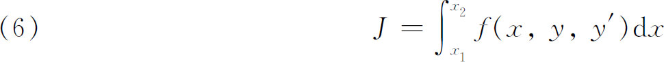
极大或极小化，其中y（x）是待定的。拉格朗日的一个改革是引进通过端点（x1，y1）和（x2，y2）的新曲线而不是去改变极大或极小化曲线的个别的坐标。拉格朗日把这些新的曲线表示为形式
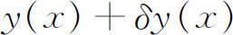
（图24.5），δ是拉格朗日引进的一个特殊符号，用来表示整个曲线y（x）的变分。在（6）的被积函数中引进了一条新的曲线当然就改变了J的值。因此J的增量，记为ΔJ，是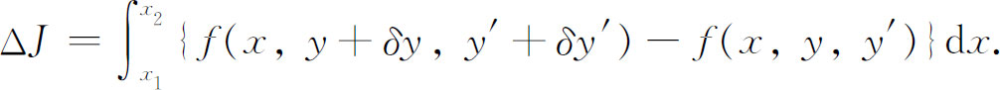
现在拉格朗日把f看作是三个自变量的函数，但因x是不变的，所以对一个双变量函数应用泰勒定理就能把被积函数展开。展开式给出δy和δy′的一次项，这些增量的二次项等。于是拉格朗日写下
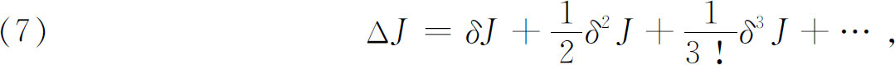
其中δJ表示δy和δy′的一次项的积分，δ2J表示二次项的积分等。这样就有
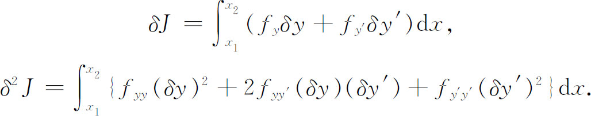
δJ叫做J的一次变分，δ2J叫做J的二次变分等。
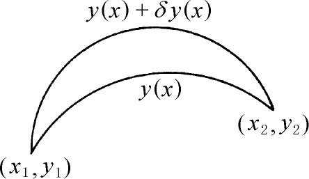
图24.5
拉格朗日接着论证道，因为δJ中包含小的变分δy和δy′的一阶项，所以δJ的值控制了（7）的右端，从而当δJ是正或负时，ΔJ将是正或负的。但是在J的极大值或极小值处，和单变量函数f（x）通常的极大或极小的情形一样，ΔJ必须有相同的符号，所以对于极大化函数
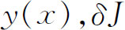
一定等于0。此外，拉格朗日说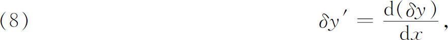
即运算d和δ的次序可以交换。这是正确的，虽然对于拉格朗日的同辈人来说理由是不清楚的，后来欧拉阐明了理由［。容易看出这是正确的，因为如果我们把
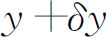
写作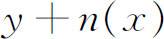
，其中n（x）是y（x）的变分，那么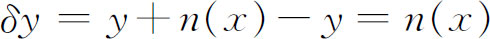
，而且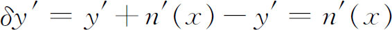
，但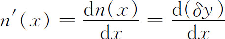
。］利用（8），拉格朗日把一次变分写成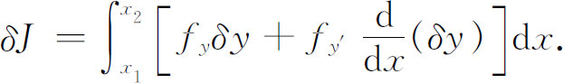
对第二项分部积分并且利用δy在x1和x2处必须等于0这一事实，就得到
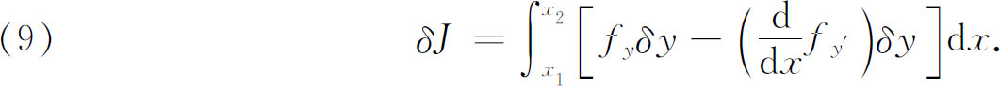
现在对一切变分δy，δJ都必须为0。因此拉格朗日下结论说，δy的系数必须为0(19)，或即
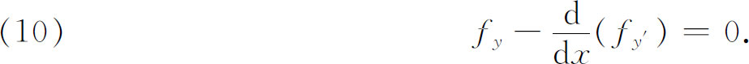
这样，拉格朗日达到了欧拉曾经得到的y（x）的同一个常微分方程。拉格朗日推导（10）的方法（除去他用了微分外），甚至他的记号，至今还在使用。当然，（10）是关于y（x）的必要条件而不是充分条件。
拉格朗日在1760年或1761年的这篇论文中还第一次推导出具有变动端点问题的极小化曲线必须满足的端点条件。他还找到了在极小化曲线和固定曲线或曲面的交点处必须成立的横截性条件，比较曲线的端点容许在这些固定的曲线或曲面上变动（图24.6）。
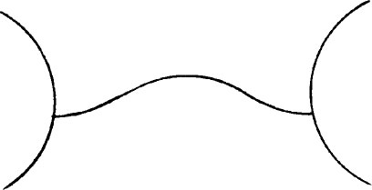
图24.6
虽然关于形式（6）的极大或极小化积分还有很多东西要说，但是就历史而言，拉格朗日采取的第二步是在他1760年或1761年这篇论文和以后的一篇论文(20)中所研究的导致重积分的问题。需要极大化或极小化的积分具有形式
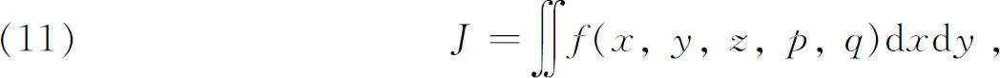
其中z是x，y的函数，
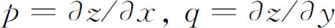
。积分展布在x-y平面的某个区域上。于是问题就是要求使J的值达到极大或极小的函数z（x，y）。在这类重积分的许多问题中最重要的一个是在边界以某种方式固定的所有曲面中求面积最小的曲面。譬如可以假定在空间给出两条不自交的闭曲线，然后求由这两条曲线界住的面积最小的曲面。作为极小曲面问题的一个特殊情形，这两条曲线可以是平行于y-z平面而中心在x轴上的圆周（图24.7）。那么可能的极小曲面一定是由这两个圆周界住的旋转曲面，而问题就是求使面积最小的旋转曲面。这后一个问题，正如上文已指出的，是早已由欧拉在1744年解决了的。但是旋转曲面的这一特殊情形，可以采用适合于积分（11）的理论来处理。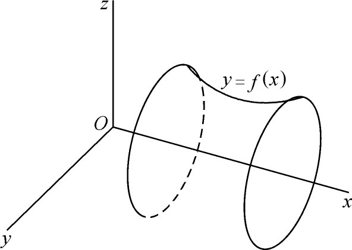
图24.7
拉格朗日按照他对较简单的积分（6）曾经用过的类似方法，得到了使（11）取极小的函数z（x，y）必须满足的微分方程。如果采用通常的记号
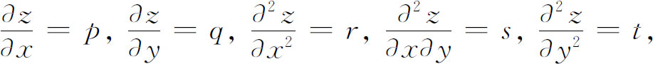
那么方程是
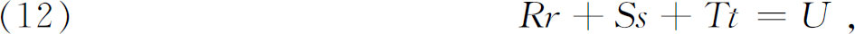
其中R，S，T和U都是x，y，z，p和q的函数。这个非线性二阶偏微分方程，称为蒙日方程，是不容易求解的，这种形式的方程曾经是欧拉以前时代的研究课题（第22章第7节）。
在极小曲面问题的情形中，积分（11）变成
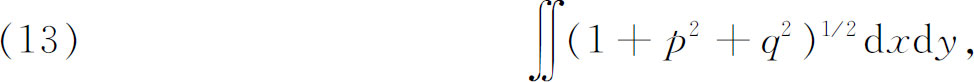
而且，对于这类特殊问题，偏微分方程（12）变成
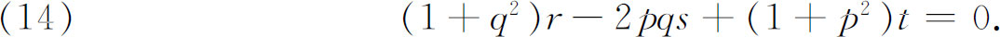
这个方程是由拉格朗日在他1760年或1761年的论文中给出的（虽然不完全是这种形式），而且是极小曲面理论的一个主要的分析结果。几何上，如默尼耶在1785年的一篇论文(21)中指出的，这个偏微分方程表示如下事实：在极小化曲面的任一点上，主曲率半径是相等而反向的，或说平均曲率（即主曲率的平均值）为零。
拉格朗日在后来（1770）的一篇论文(22)中还研究了被积函数中有高阶导数的单重和多重积分。这个课题自拉格朗日时代之后得到很好的发展，现在是变分法的标准内容。但是，因为它的原理和已经讨论过的原理没有什么差别，所以这里就不深入讨论了。拉格朗日关于变分法的论文的内容编进了他的《分析力学》中。
变分法并没有很好地为拉格朗日和欧拉的同辈人理解。欧拉在许多著作中阐明了拉格朗日的方法，并用这个方法重新证明了几个老的结果。虽然他认识到变分法是一个新的分支，或者如他所说，是用新的运算符δ进行符号化了的新的技巧，但他像拉格朗日一样，试图在普通微积分的基础上建立变分法的逻辑。欧拉的思想(23)是引进一个参数t，使得变分问题中的曲线族随着t而变化，即对于某个区间中的每个t，应该有一条曲线
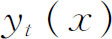
。然后欧拉就说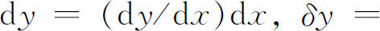
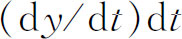
。因此变分δy表示成了关于t的偏微商。然后他用这个关于t的微商的新概念确切陈述了变分法的技巧。当然他最终得到的结果和早先得到的结果是相同的。欧拉继续研究具有极大或极小性质的空间曲线（1779）(24)，而且研究了在三维空间中有外力（在通常的问题中是重力）作用时或存在阻尼介质时最速降线问题的推广（1780）(25)。